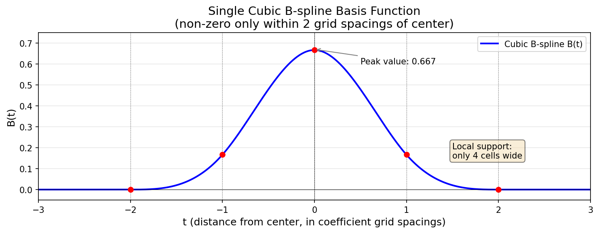
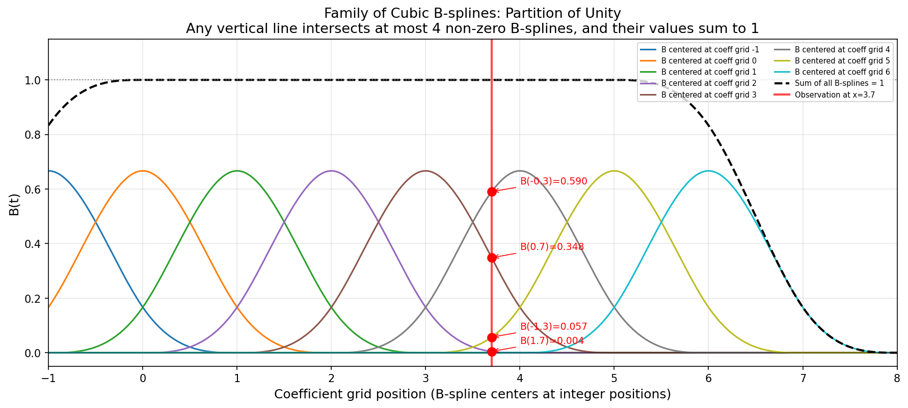
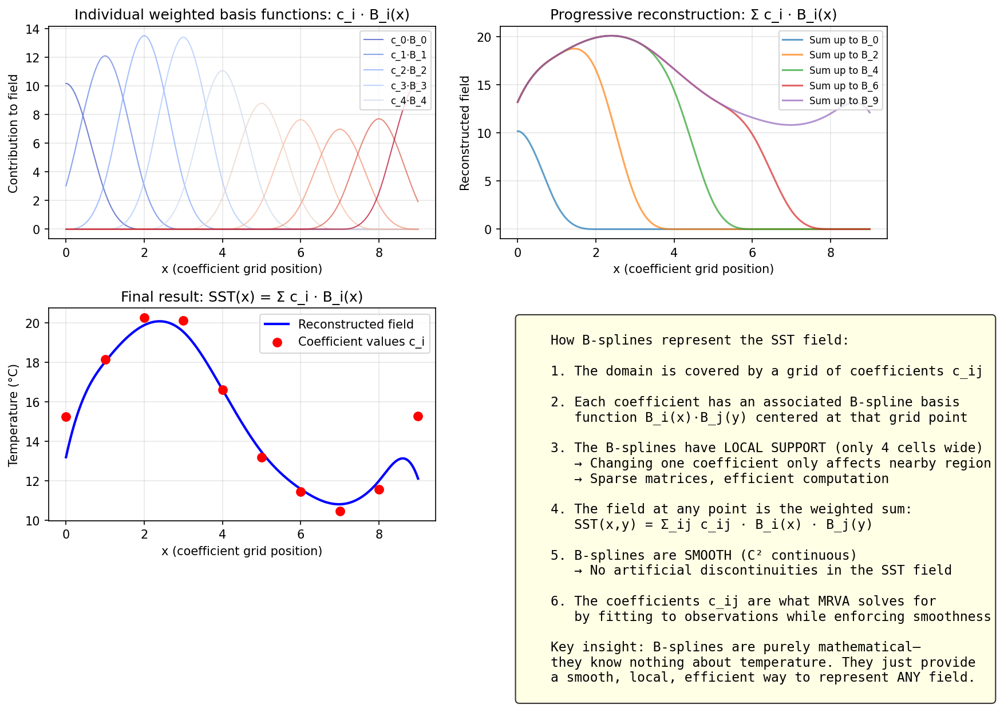
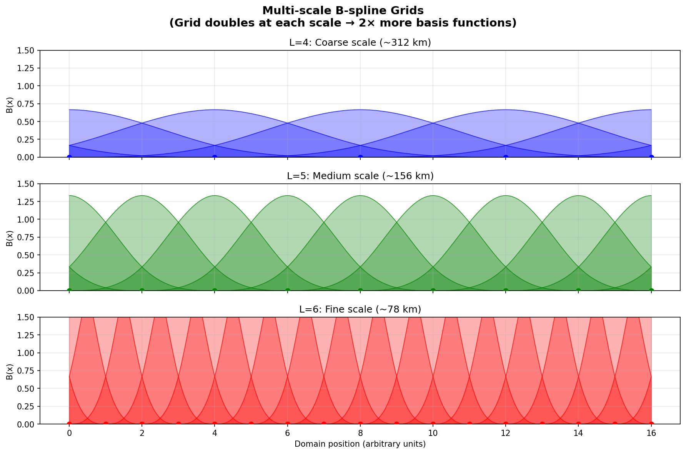

The MRVA algorithm
Multi-scale variational analysis: one field fitted from the basin scale down to a few kilometres, on a B-spline basis.
The idea
Rather than interpolating observations directly, MRVA solves for the coefficients of a smooth field that best fits every observation at once, subject to a smoothness penalty. It does this repeatedly at a ladder of resolutions — coarse first, then progressively finer — with each scale correcting the residual left by the one above it.
This matters because the observing system is heterogeneous. A microwave radiometer sees through cloud at roughly 25 km; an infrared imager resolves a kilometre but only in clear sky; a buoy is a single exact point. Fitting them all at a single resolution would either throw away the fine detail or over-fit the sparse instruments. Solving scale by scale lets each instrument contribute only at the scales it can actually resolve.
Algorithm overview
Conceptual Framework
MRVA solves the SST analysis problem as a constrained optimization that balances two competing objectives:
Minimize: J = J_data + J_smooth
Where:
J_data = weighted sum of squared residuals against observations
J_smooth = smoothness penalty (thin-plate regularization)The solution is represented using cubic B-spline basis functions:
SST(x,y) = Σ c_ij * B_i(x) * B_j(y)Where:
c_ijare coefficient values (the unknowns to solve for)B_i(x), B_j(y)are cubic B-spline basis functions- The summation is over all grid points at a given scale
Key Features
- Multi-scale hierarchy: Process from coarse (L=2, ~1250km) to fine scales (L=11, ~2.5km)
- Variational formulation: Optimal balance between data fidelity and smoothness
- Spline representation: Continuous field with local support (smooth interpolation)
- Adaptive weighting: Scale-dependent data influence prevents aliasing
- Temporal decay: Recent observations weighted more heavily
- Latitude correction: Accounts for spherical geometry (anisotropic smoothing)
- Multi-sensor fusion: Combines satellite, in-situ, and ice data
Why Multi-Scale?
Processing in a coarse-to-fine hierarchy provides several advantages:
- Computational efficiency: Solve on coarse grids first (fewer unknowns)
- Convergence: Initialize fine scales with coarse-scale solution
- Physical consistency: Large-scale features constrain small-scale details
- Data fusion: Use coarse sensors at large scales, high-res sensors at fine scales
- Gap filling: Coarse scales provide background where fine-scale data is sparse
B-spline basis functions
What are B-splines?
B-splines are purely mathematical basis functions—they have no inherent connection to temperature or ocean physics. They provide a smooth, local "building block" for representing continuous fields.
Unlike Fourier analysis (which uses many different basis shapes—sin(x), sin(2x), sin(3x), etc.), MRVA uses a single basis function shape: the cubic B-spline. Copies of this one function are placed at each point on a coefficient grid, and the SST field is reconstructed as their weighted sum:
SST(x,y) = Σ c_ij · B(x - x_i) · B(y - y_j)Where:
c_ijare the coefficient values at coefficient grid point (i,j) — the unknowns we solve forB(t)is the single cubic B-spline function, evaluated at distance t from the centerx_i, y_jare the coefficient grid positions where B-splines are centered
Key Properties
| Property | Description | Benefit for MRVA |
|---|---|---|
| Local support | Non-zero only within 2 grid spacings of its center | Sparse matrices, O(N) computation |
| Smoothness | C² continuous (continuous 2nd derivative) | No artificial discontinuities in SST |
| Partition of unity | At any point, the nearby B-splines sum to 1 | Unbiased interpolation between grid points |
| Symmetric | B(t) = B(-t) | Distance is all that matters, not direction |
| Non-negative | Always ≥ 0 | Numerically stable |
| Tensor product | 2D evaluation = B(dx) · B(dy) | Separable, efficient computation |
The B-spline Function
There is one function, the cubic B-spline, evaluated at a distance t from its center:
B(t) = (4 - 6|t|² + 3|t|³) / 6 for |t| < 1
B(t) = (2 - |t|)³ / 6 for 1 ≤ |t| < 2
B(t) = 0 for |t| ≥ 2
The input t is the distance (in coefficient grid spacings) from the evaluation point to the B-spline center. This is the only function needed—every B-spline in the system is just this function evaluated at a different distance.
Coefficient Grid vs Output Grid
An important distinction: the B-spline centers sit on the coefficient grid, which is much coarser than the 0.01° output grid:
| Scale | Coefficient grid spacing | Output grid (0.01°) | Ratio |
|---|---|---|---|
| L=6 | ~0.70° | 0.01° | ~70x coarser |
| L=8 | ~0.17° | 0.01° | ~17x coarser |
| L=10 | ~0.045° | 0.01° | ~4.5x coarser |
| L=11 | ~0.022° | 0.01° | ~2.2x coarser |
Observations from satellites and buoys fall at arbitrary lat/lon positions that are almost never aligned with the coefficient grid. Likewise, the 0.01° output grid points sit between coefficient grid centers. This is why the partition of unity property matters.
Partition of Unity
At any arbitrary position on the domain, the B-splines from the nearest coefficient grid points sum to exactly 1. This is visualized by drawing a vertical line anywhere on the family plot—it intersects at most 4 non-zero B-splines, and their values always sum to 1:

This property guarantees:
- No information is lost or invented when projecting observations onto the coefficient grid
- Constant fields are exact: if all coefficients equal 20°C, the field evaluates to exactly 20°C everywhere
- No systematic bias at positions between coefficient grid centers
How Observations Enter the System
When an observation at position x_obs is projected onto the coefficient grid, there is no "assignment" to a single grid point. Instead:
- Compute
floor(x_obs)to identify the 4 nearby coefficient grid points:floor(x_obs) + {-1, 0, 1, 2} - Compute the distance from
x_obsto each of those 4 grid points - Evaluate the B-spline function
B(distance)for each — these are the weights - The observation contributes to all 4 grid points simultaneously, proportional to these weights
Example: observation at coefficient grid position 3.7
Grid point: 2 3 4 5
Distance: 1.7 0.7 0.3 1.3
B(distance): 0.005 0.348 0.590 0.057 (sum = 1.0)
↑
closest grid point gets
the largest weightDue to the B-spline's symmetry, this is mathematically equivalent to centering a B-spline at the observation and evaluating it at each grid point. The floor operation is just bookkeeping to identify which 4 grid points are nearby—the B-spline function and distances do all the actual work.
In 2D, the same process applies independently in x and y (tensor product), affecting a 4×4 = 16-point neighborhood.
Field Reconstruction
The coefficients c_ij determine the SST field. Each coefficient multiplies its associated basis function, and the sum produces the continuous field:

Multi-Scale B-splines
At each scale L, the coefficient grid spacing halves and the number of basis functions doubles:

This is the "wavelet-like" aspect of MRVA—the hierarchical multi-resolution structure—though the B-splines themselves are not wavelets (they don't have zero mean or the strict frequency localization properties of wavelets). The multi-resolution comes from the grid density, not from different basis function shapes.
Why B-splines (not wavelets)?
While MRVA's multi-resolution approach is inspired by wavelet analysis, it uses B-splines rather than true wavelets because:
- Non-negativity: B-splines are always ≥ 0, simplifying physical interpretation
- Interpolation: B-splines naturally interpolate between grid points
- Simplicity: The tensor-product structure B(dx)·B(dy) is straightforward
- Smoothness: Cubic B-splines provide C² continuity without oscillations
Wavelets (which oscillate and have zero mean) would require more complex handling for a physical field like SST that is inherently positive and smooth.
Mathematical formulation
Variational Problem
At each scale L, MRVA solves:
(A + R) c = b
Where:
A = Gram matrix of basis functions evaluated at observation locations
(contains NO actual SST values—only geometric information about
where observations constrain the solution)
R = regularization term matrix (thin-plate smoothness penalty)
c = coefficient vector (the unknowns we solve for)
b = right-hand side vector (actual SST observations projected onto
the basis functions—this is where measured values enter)This is the Euler-Lagrange equation (normal equations) derived from minimizing the cost function J.
Important clarification: The matrix A does NOT contain observation values. It encodes the geometry of the observation configuration in coefficient space—specifically, products of basis functions evaluated at observation locations. The actual measured SST values appear only in the right-hand side vector b.
Data Term
For each observation (latitude, longitude, SST_obs, error, time):
- Identify the 4×4 coefficient grid neighborhood around the observation
- Compute distances from the observation to each of the 16 nearby coefficient grid points
- Evaluate B(distance) for each — these are the basis weights
- Accumulate contributions to the system matrix and right-hand side:
For each observation:
combined_weight = (1/rms²) × exp(-(t/decay)²) × density_scaling
├─────┘ ├───────────────┘ ├──────────────┘
error temporal decay rho (prevents dense
confidence (recent obs count clusters from
more) dominating)
For each of the 16 nearby coefficient grid points (i,j) and (k,l):
dx_i = distance from obs to grid point i (in x)
dy_j = distance from obs to grid point j (in y)
b_ij += B(dx_i) · B(dy_j) · SST_obs · combined_weight
↑
ACTUAL MEASUREMENT
(only place SST values appear)
A_ij,kl += B(dx_i) · B(dy_j) · B(dx_k) · B(dy_l) · combined_weight
↑ ↑
products of B-spline distances (NO SST values)Multiple observations in the same grid cell are accumulated (summed), not averaged. The rho density scaling factor prevents clusters from having disproportionate influence:
density_scaling(i,j) = 1 / (rho × (count(i,j) - 1) + 1)Where count(i,j) is the number of observations in that coefficient grid cell.
Key insight: The matrix A does NOT contain observation values. It encodes the geometry of the observation configuration—specifically, products of B-spline values based on distances to coefficient grid points. The actual measured SST values appear only in the right-hand side vector b.
Three Phases of the Algorithm
The full process has three distinct phases:
Phase 1 — Build the system (subroutine spmDataScale in spmm.f):
For each observation:
compute distances to 4×4 coefficient grid neighborhood
evaluate B(distance) for each grid point
accumulate into A (basis products × weight) and b (basis × SST_obs × weight)Phase 2 — Solve (PCG/SOR iterative solver):
(A + R) c = b → find optimal coefficients cPhase 3 — Evaluate (output generation):
For each output grid point (0.01° spacing):
compute distances to 4×4 coefficient grid neighborhood
SST = Σ c_ij × B(dx_i) × B(dy_j)
(No scaling factors — just coefficients × basis values)The scaling factors (error weight, temporal decay, density correction) only exist in Phase 1. Phase 3 is purely coefficients multiplied by B-spline distance values.
Smoothness Regularization
The regularization term penalizes non-smooth solutions using thin-plate splines:
R = wx*S11⊗S00 + wy*S00⊗S11 + wxx*S22⊗S00 + wyy*S00⊗S22 + wxy*S11⊗S11
Where:
S00 = B-spline inner products (0th derivative)
S11 = B-spline inner products (1st derivative)
S22 = B-spline inner products (2nd derivative)
⊗ = tensor product (separable x,y application)
Weights:
wx, wy = first derivative penalties (gradient smoothness)
wxx, wyy = second derivative penalties (curvature smoothness)
wxy = cross-derivative penalty (prevent oscillations)Latitude correction accounts for spherical geometry:
w_longitude(lat) = 1 / max(cos²(lat), 0.03)
w_curvature(lat) = 1 / max(cos⁴(lat), 0.03)This ensures isotropic smoothness in physical space despite lat-lon grid distortion near poles.
Scale-dependent regularization strength:
Regularization coefficient:
c = 20 (L ≤ 8) - Coarse/medium scales, moderate smoothing
c = 40 (L ≥ 9) - Fine scales, stronger smoothing to prevent overfittingSpatial Density Weighting (Rho)
The rho weighting prevents dense data clusters from dominating:
rho = 0.8 * exp(-(45/2^L)/4.0)
scaling(i,j) = 1 / (rho * (count(i,j) - 1) + 1)
Where:
count(i,j) = number of observations in grid cell (i,j)Effect:
- Single observation in cell:
scaling = 1.0(full weight) - N observations in cell: weight is shared, preventing over-influence
- As L increases (finer scales), rho → 0, reducing downweighting effect
Purpose: Ensure sparse regions aren't overwhelmed by data-rich areas.
Multi-scale processing flow
Detailed Algorithm
flowchart TD
START([Initialize MRVA]) --> CONFIG[Read configuration<br/>scales, sensors, parameters]
CONFIG --> CHECKMODE{NRT or<br/>REA mode?}
CHECKMODE -->|NRT| LOADBG[Load L=6 coefficients<br/>from previous day]
CHECKMODE -->|REA| ZEROBG[Start from zero<br/>L0=2]
LOADBG --> LOOPSTART{For L = L0 to LF}
ZEROBG --> LOOPSTART
LOOPSTART -->|L = L0| INITGRID[Initialize grid<br/>mx, my at L0]
LOOPSTART -->|L > L0| DOUBLEGRID[Double resolution<br/>mx *= 2, my *= 2<br/>Upsample coefficients]
INITGRID --> BUILDMAT[Build regularization matrix<br/>Thin-plate operator R]
DOUBLEGRID --> BUILDMAT
BUILDMAT --> CHECKBG{L == L0 and<br/>background?}
CHECKBG -->|Yes| ADDBG[Add background field<br/>to system]
CHECKBG -->|No| ADDOBS
ADDBG --> ADDOBS
ADDOBS[Incorporate observations<br/>Filter by La ≤ L ≤ Lb] --> WEIGHT[Apply weights:<br/>- Temporal decay<br/>- Rho scaling<br/>- Error weighting]
WEIGHT --> PROJECT[Project to B-spline basis<br/>Build system matrix A, vector b]
PROJECT --> SOLVE[Solve PCG:<br/>A + R c = b<br/>Tolerance: 1e-8 or 1e-3]
SOLVE --> RESIDUAL[Compute residuals<br/>obs - analysis]
RESIDUAL --> ACCUMULATE[Accumulate coefficients<br/>csp = dsp + csp]
ACCUMULATE --> WRITECOEF[Write outputs:<br/>- mrva.cXX<br/>- mrva.uXX<br/>- map file]
WRITECOEF --> NEXTSCALE[dsp := csp<br/>Prepare for next scale]
NEXTSCALE --> CHECKLAST{L < LF?}
CHECKLAST -->|Yes, L++| LOOPSTART
CHECKLAST -->|No| SAMPLE[Sample at L=10<br/>~1km resolution]
SAMPLE --> NETCDF[Generate NetCDF<br/>SST, error, mask]
NETCDF --> END([Complete])
style START fill:#90ee90
style END fill:#90ee90
style SOLVE fill:#ffb6c1
style NETCDF fill:#87ceeb
Incremental Refinement
The algorithm operates in residual mode after the first scale:
timeline
title Multi-Scale Refinement Process
section Coarse Scales (Basin-scale)
L=2 (1250 km) : Fit large-scale features
: Basin-scale circulation
: All sensors contribute
L=3 (625 km) : Add gyre-scale details
: Major ocean currents
L=4 (312 km) : Add large eddies
: Mesoscale features
section Medium Scales (Fronts)
L=5 (156 km) : Medium eddies
L=6 (78 km) : Thermal fronts
: NRT background field
L=7 (39 km) : Small fronts
L=8 (19 km) : Coastal features
: Buoys excluded (L>8)
section Fine Scales (High-res)
L=9 (10 km) : Nearshore details
: Only high-res sensors
L=10 (5 km) : Product output
: 1km MUR SST
L=11 (2.5 km) : Maximum detail
: Coefficient storage
Progression:
Scale L=2: csp_2 ≈ SST observations (large-scale fit)
Scale L=3: csp_3 = csp_2 + corrections_3 (add medium-scale)
Scale L=4: csp_4 = csp_3 + corrections_4 (add mesoscale)
...
Scale L=11: csp_11 = csp_10 + corrections_11 (finest details)Each scale corrects the previous representation by adding finer-scale details.
What the scales mean
Scale-to-Resolution Mapping
The scale parameter L determines the grid spacing and effective resolution:
| Scale L | Grid Spacing | Effective Resolution | Feature Size | Typical Use |
|---|---|---|---|---|
| 2 | ~11.25° | ~1250 km | Basin-scale | Major ocean basins |
| 3 | ~5.6° | ~625 km | Gyre-scale | Subtropical gyres |
| 4 | ~2.8° | ~312 km | Large mesoscale | Major eddies |
| 5 | ~1.4° | ~156 km | Mesoscale | Medium eddies |
| 6 | ~0.7° | ~78 km | Sub-mesoscale | Thermal fronts |
| 7 | ~0.35° | ~39 km | High resolution | Small fronts |
| 8 | ~0.17° | ~19 km | Very high res | Coastal features |
| 9 | ~0.09° | ~10 km | Ultra high res | Nearshore details |
| 10 | ~0.045° | ~5 km | Product output | 1km MUR product |
| 11 | ~0.022° | ~2.5 km | Maximum detail | Coefficient storage |
Grid doubling formula:
grid_spacing(L) = 45° / 2^L
mx(L) = mx0 * 2^(L-L0)
my(L) = my0 * 2^(L-L0)Processing Range
Reanalysis (REA) mode:
- L0 = 2 (start from coarse scale, build from scratch)
- LF = 11 (compute to finest scale)
- Output at L = 10 (~1km product)
Near Real-Time (NRT) mode:
- L0 = 6 (initialize from previous day's L=6 coefficients)
- LF = 11 (refine to finest scale)
- Output at L = 10 (~1km product)
Why compute to L=11 but output at L=10?
- L=11 captures highest-frequency information
- L=10 provides optimal balance of resolution and noise
- L=11 coefficients stored for next day's NRT bootstrap
How observations enter
Scale-Dependent Sensor Usage (La/Lb Parameters)
Different sensors contribute at different scales based on their resolution:
gantt
title Sensor Usage Across Scales (La to Lb)
dateFormat X
axisFormat %L
section Buoys (In-situ)
IQUAM Buoys (La=2, Lb=8) :buoy, 2, 7
section Microwave
AMSR2R ~25km (La=2, Lb=8) :amsr, 2, 7
section Infrared (High-res)
MODISA ~1km (La=2, Lb=12) :modisa, 2, 11
MODIST ~1km (La=2, Lb=12) :modist, 2, 11
section Infrared (Medium-res)
AVMTBG ~1-4km (La=2, Lb=9) :avhrr, 2, 8
section Ice Model
Ice SST ~10km (La=2, Lb=9) :ice, 2, 8
Sensor Parameters:
| Sensor | Type | Resolution | La | Lb | Scales Used | Rationale |
|---|---|---|---|---|---|---|
| IQUAM Buoys | In-situ | Point | 2 | 8 | 2-8 | Point measurements, medium-scale influence |
| AMSR2R | Microwave | ~25 km | 2 | 8 | 2-8 | All-weather, coarse resolution |
| MODISA | Infrared | ~1 km | 2 | 12 | 2-12 | High resolution, all scales |
| MODIST | Infrared | ~1 km | 2 | 12 | 2-12 | High resolution, morning pass |
| AVMTBG | Infrared | ~1-4 km | 2 | 9 | 2-9 | Medium resolution |
| Ice SST | Ice model | ~10 km | 2 | 9 | 2-9 | High confidence in ice regions |
Design principles:
- Prevent aliasing: Exclude coarse-resolution sensors at fine scales
- AMSR2 (25km) not used at L>8 (19km grid spacing)
- Prevents under-resolved features from degrading analysis
- Multi-scale fusion: High-res sensors contribute across all scales
- MODIS (1km) used from L=2 to L=12
- Provides both large-scale and fine-scale information
- Complementary coverage:
- Microwave (AMSR2): all-weather, coarse resolution
- Infrared (MODIS, AVHRR): cloud-limited, high resolution
- In-situ (buoys): sparse, high accuracy
- Ice: critical in polar regions
Multi-Sensor Advantages
By combining multiple sensors at appropriate scales:
- Gap filling: Infrared gaps (clouds) filled by microwave and buoys
- Consistency: Large-scale features constrained by all sensors
- Resolution: Fine-scale details from high-res sensors where available
- Validation: Cross-sensor consistency checks
- Robustness: No single sensor failure breaks the analysis
Outlier and bias handling
Before the final solve, observations are screened against a reference field built from the coarse scales, and a per-sensor bias correction is applied to the infrared instruments. The reference field is normally the analysis's own coarse-scale solution; a separate L4 product can serve as a bootstrap background when no prior coefficient exists at all.
Temporal weighting
Decay Parameters
Observations are weighted by their age relative to the analysis time:
weight = error * exp(-(t/decay)²)
Where:
t = time offset from analysis time (hours)
decay = temporal decay parameter (scale-dependent)Scale-dependent decay times:
| Scale Range | Decay (hours) | Physical Interpretation |
|---|---|---|
| L = 2-5 | 48 | Large ocean features evolve slowly |
| L = 6 | 42 | Mesoscale features begin to move |
| L = 7 | 36 | Thermal fronts migrate |
| L = 8 | 30 | Small features more ephemeral |
| L = 9 | 24 | Fine details change rapidly |
| L = 10 | 18 | Ultra-high-res features transient |
| L = 11 | 12 | Maximum temporal localization |
Example weight decay:
At L=11 (decay=12 hours):
- 0 hours old: weight = 1.00 (100%)
- 6 hours old: weight = 0.78 (78%)
- 12 hours old: weight = 0.37 (37%)
- 24 hours old: weight = 0.02 (2%)
Rationale:
- Coarse scales: Basin-scale features persist for days, use ±2 day window
- Fine scales: Small eddies and fronts evolve hourly, demand recent data
Temporal Window
Preprocessing components collect data over temporal windows:
- L2P satellites: ±2 days (5-day total)
- iQUAM buoys: ±3 days (7-day total)
- Ice concentration: Single day (analysis day)
Temporal decay weighting effectively narrows these windows at fine scales.
The solver
Preconditioned Conjugate Gradient (PCG)
The linear system (A + R)c = b is solved iteratively using PCG:
Algorithm:
1. Initialize: c = initial guess (upsampled from previous scale)
2. Compute residual: r = b - (A + R)c
3. Apply preconditioner: z = M^(-1) r
4. Iterate until convergence:
- Compute search direction
- Line search for optimal step size
- Update solution and residuals
- Check convergence: ||r|| < tolerancePreconditioner: Diagonal (Jacobi) scaling
M = diag(A + R)Improves convergence by equilibrating the system.
Convergence tolerance:
- Coarse/medium scales (L < 9):
ε = 1e-8(strict convergence) - Fine scales (L ≥ 9):
ε = 1e-3(relaxed, large system size)
Parallelization:
- Matrix-vector products: Parallel over grid points
- Reductions: Parallel summation with thread-safe accumulation
- Thread count: Typically 64 threads (configurable)
Computational Complexity
Grid size doubles at each scale:
L=2: ~100 × 100 = ~10^4 unknowns
L=5: ~800 × 800 = ~6×10^5 unknowns
L=8: ~6,400 × 6,400 = ~4×10^7 unknowns
L=11: ~51,200 × 51,200 = ~2.6×10^9 unknownsProcessing time scales roughly as:
- Grid size: O(N) where N = mx × my
- Iterations: Typically 10-50 iterations per scale
- Total: O(N × iterations) per scale
Most computational cost is at finest scales (L=9-11).
What the analysis writes
Coefficient Files (mrva.cXX)
Format: Binary, direct-access Fortran unformatted
Contents:
Record 1: mx, my, mz, nv (grid dimensions, levels, variables)
Record 2: xmin, xmax, ymin, ymax (domain bounds)
Record 3: csp(coeffSize) (coefficient array)
Where:
coeffSize = (mx+3-cix) * (my+3) * mz * nv
cix = 3 (cyclic boundary in longitude)Coefficient array:
- Extended grid: Includes ghost cells for B-spline support
- Cyclic longitude: Enables wrap-around at date line
- Stored for scales L=2 through L=11
Usage:
- NRT mode: L=6 coefficients initialize next day's analysis
- REA mode: All scales stored for archival
- Output generation: L=10 sampled for 1km product
Uncertainty Files (mrva.uXX)
Format: Same structure as coefficient files
Contents: Approximation of posterior variance
u(i,j) ≈ 1 / diagonal(Hessian)Physical meaning:
- Smaller values: High confidence (many observations, strong constraints)
- Larger values: Low confidence (sparse data, weak constraints)
Usage in final product:
- Read at scale L=8 (medium resolution for smoothness)
- Scaled to target range (e.g., min=0.3°C, mean=0.5°C)
- Output as
analysis_errorfield in NetCDF
NetCDF Output
File: <DATE>090000-JPL-L4_GHRSST-SSTfnd-MUR-GLOB-v02.0-fv04.1.nc
Key variables:
analysed_sst: Sea surface temperature (K)analysis_error: Estimated error (K)mask: Land/ice/sea classificationsea_ice_fraction: From OSI-SAF (0-1)dt_1km_data: Distance to nearest high-res observation (km)
Metadata:
- GHRSST L4 compliant
- CF-1.6 conventions
- Comprehensive global attributes (processing parameters, references)
Grid: 0.01° × 0.01° (approximately 1km at equator)
Further reading
The published description of the method:
- Chin, T. M., Vazquez-Cuervo, J., and Armstrong, E. M. (2017). “A multi-scale high-resolution analysis of global sea surface temperature.” Remote Sensing of Environment, 200, 154–169.
The MATLAB and Fortran that implement it are described in MRVA internals.